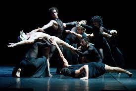
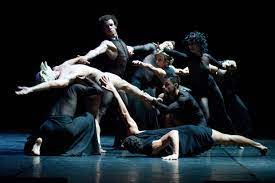

Sobre a Dança Contemporânea
A história da dança contemporânea é uma narrativa fascinante de evolução e revolução no mundo da arte do movimento. Originada como uma resposta ao conservadorismo da dança clássica e influenciada pelo movimento moderno do século XX, a dança contemporânea emergiu como uma forma de expressão que transcende limites tradicionais, desafia convenções estéticas e mergulha em uma exploração inovadora do corpo humano em movimento. O movimento moderno do século passado, liderado por visionários como Martha Graham, Isadora Duncan e Merce Cunningham, foi um ponto de partida crucial para a dança contemporânea. Esses pioneiros desafiaram a rigidez das técnicas clássicas, introduzindo movimentos mais fluidos, expressão emocional intensa e uma abordagem mais livre à coreografia. Suas contribuições estabeleceram as bases para uma linguagem de dança que se afastou dos padrões predefinidos e abraçou a liberdade criativa. Na década de 1960, Pina Bausch revolucionou a dança contemporânea com seu Tanztheater, uma fusão de dança e teatro que explorava a condição humana de maneiras emocionalmente crua e provocativa. Bausch introduziu a ideia de que a dança poderia ser mais do que movimentos abstratos; poderia ser uma forma de contar histórias complexas, explorando as profundezas da psique humana. À medida que a dança contemporânea progredia, os anos 1980 e 1990 testemunharam a ascensão de figuras como William Forsythe e Ohad Naharin. Forsythe, por exemplo, desafiou as noções convencionais de espaço e tempo na dança, enquanto Naharin, com seu movimento revolucionário chamado de "Gaga", incentivou os dançarinos a explorarem novas sensações e conexões físicas. O novo milênio trouxe uma explosão de criatividade e experimentação à dança contemporânea. Coreógrafos como Crystal Pite e Akram Khan têm explorado não apenas a diversidade de movimentos, mas também as interseções entre dança, tecnologia, e outras formas de arte. Suas obras refletem as complexidades da sociedade contemporânea, questionando normas e desafiando a audiência a reconsiderar suas próprias perspectivas. Com a ascensão de companhias de dança contemporânea renomadas, como a Nederlands Dans Theater e a Batsheva Dance Company, a influência dessa forma de arte se estende globalmente, inspirando dançarinos e coreógrafos a explorarem novos territórios criativos. A dança contemporânea, mais do que uma simples manifestação artística, tornou-se um meio dinâmico de expressar ideias, emoções e questões sociais em constante evolução. Em última análise, a história da dança contemporânea é uma jornada intrépida, marcada por inovação, experimentação e uma profunda conexão com a evolução cultural. Desde os movimentos revolucionários dos pioneiros até as performances intrincadas e provocativas da atualidade, a dança contemporânea permanece como um testemunho da capacidade humana de transcender fronteiras, desafiar a norma e celebrar a beleza da liberdade expressiva.
Explorando movimentos fluidos e emocionais, a dança contemporânea desafia as convenções e busca novas formas de contar histórias através do corpo em movimento.
.jpg) 
